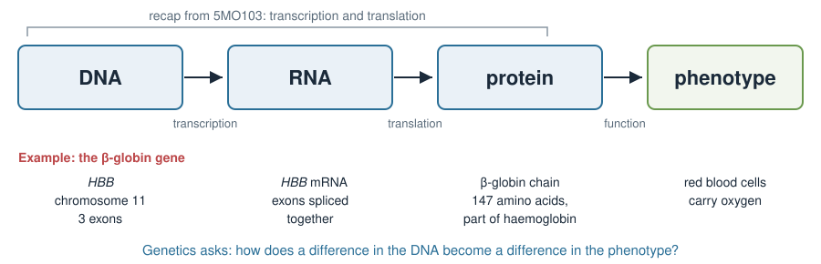
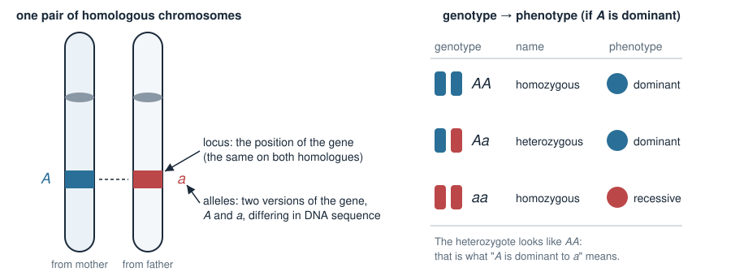
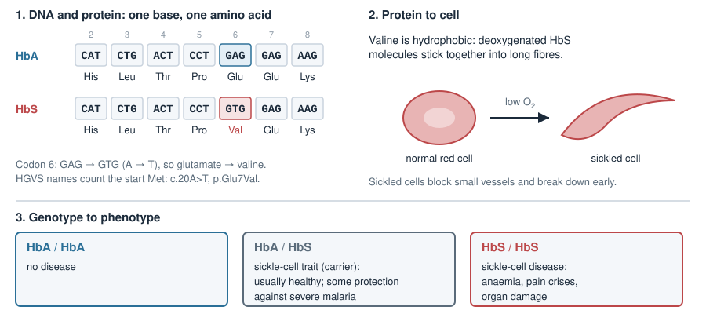
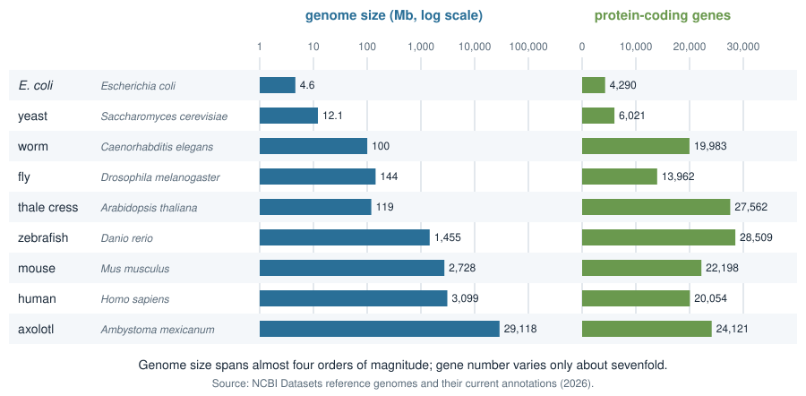
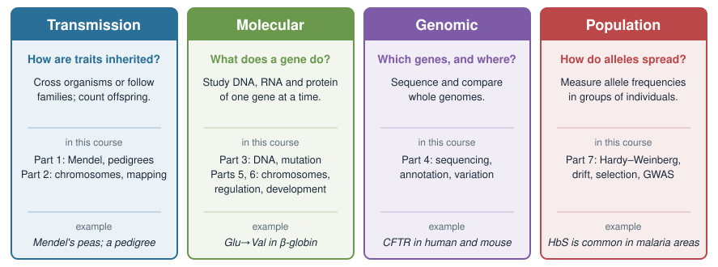

Part 1: Mendelian genetics. Genes, alleles, genomes and how we study them
Basic and molecular genetics (5MO104)
About this lecture
Genetics is the study of biological information: how it is stored in DNA, how it is copied and passed on, and how differences in it become differences between individuals.
A short recap of DNA → RNA → protein → phenotype (from 5MO103).
The words we will use all course: gene, allele, locus, genotype, phenotype, homozygous, heterozygous, wild type, mutant, dominant, recessive.
One gene followed all the way from DNA to disease: HBB and sickle-cell disease.
Genomes differ hugely in size, but many genes are shared. That is why model organisms work.
Four ways to study genetics, which are also a map of this course.
Book: Hartwell, Genetics: From Genes to Genomes, introductory chapter (“Genetics: the study of biological information”).
Genetics is about information
Recap from 5MO103. The information in DNA is copied into RNA and read into protein. Proteins do the work that we see as the phenotype.

DNA is the store: it is replicated and passed to the next generation.
RNA and protein are the readout: they are made fresh in each cell.
The genetic question is about differences: a change in the DNA can change the protein, which can change the phenotype.
What is a gene?
A gene is a stretch of DNA that carries the information for one functional product, usually a protein (sometimes only an RNA).
A gene has a position on a chromosome. Human HBB, for example, sits on chromosome 11.
A gene is named with a symbol in italics: HBB (human), Cftr (mouse), w (white, fly).
The protein is written in plain type: the β-globin protein, the CFTR protein.
Level
What it is
HBB example
gene
DNA sequence at one position
HBB on chromosome 11
transcript
RNA copy, spliced
HBB mRNA
protein
the product
β-globin, one chain of haemoglobin
Genes, alleles and loci

Locus (plural loci): the place on a chromosome where a gene sits.
Allele: one version of a gene. Different alleles differ in DNA sequence.
A diploid organism has two copies of each autosomal locus, one from each parent. So it carries two alleles, which can be the same or different.
Genotype and phenotype
Genotype: the alleles an individual carries at a locus, e.g. AA, Aa or aa.
Phenotype: what we can observe or measure: a colour, a disease, an enzyme activity, a protein band on a gel.
Homozygous: two identical alleles (AA or aa). Heterozygous: two different alleles (Aa).
The phenotype depends on the genotype and on the environment. Sickle-cell symptoms, for example, get worse at low oxygen.
The same genotype can be described at different levels of phenotype: the whole organism, the cell, or the protein. We will see that this matters for the word “dominant”.
Wild type and mutant
Wild type: the allele (or phenotype) that is most common in natural or laboratory populations. Written with a plus: w+ in the fly.
Mutant: an allele that differs from wild type, usually because of a mutation, a heritable change in the DNA.
In the fly, the white gene is named after its mutant phenotype: w flies have white eyes, w+ flies have red eyes.
In humans and other natural populations, many loci have several common alleles, and none is the obvious “wild type”. Then we just name the alleles, for example the ABO blood groups.
Dominant and recessive: a first pass
In a heterozygote Aa:
if Aa looks like AA, then A is dominant and a is recessive;
the recessive phenotype appears only in aa.
Common misunderstandings.
Dominant does not mean common. Huntington disease alleles are dominant and rare.
Dominant does not mean “better” or “stronger”.
Dominance describes the relationship between two alleles for one phenotype. It is not a property of one allele alone.
This is a simplification: complete dominance. Incomplete dominance and codominance come in the Extensions to Mendel unit.
Worked example: sickle-cell disease (1)
The gene.HBB, “hemoglobin subunit beta”, on human chromosome 11 (band 11p15.4).
HBB encodes β-globin. Two β-globin and two α-globin chains make one haemoglobin molecule, which carries oxygen in red blood cells.
The gene is small: 3 exons, about 1.6 kb of DNA.
The normal allele is called HbA. The sickle allele is HbS.
The difference. HbS has one base change: codon 6 is GAG in HbA and GTG in HbS. The amino acid changes from glutamate (Glu) to valine (Val).
You will look HBB up in NCBI Gene and Ensembl in the exercise.
Worked example: sickle-cell disease (2)

Worked example: sickle-cell disease (3)
Is HbS dominant or recessive? It depends on the phenotype you look at.
Phenotype level
HbA/HbA
HbA/HbS
HbS/HbS
HbS is…
Disease (anaemia, crises)
no
no (usually)
yes
recessive
Red cells sickle at very low O2
no
some
yes
(partly) dominant
Haemoglobin type on a gel
only HbA
HbA and HbS
only HbS
codominant
At the protein level, each allele makes its own product. The heterozygote has both.
So “recessive” is a statement about one phenotype, not about the allele itself.
Genomes differ hugely in size

Genome: all the DNA of an organism (one copy of each chromosome).
Genome size runs from about 5 Mb (E. coli) to over 29,000 Mb (axolotl).
The number of protein-coding genes is far less variable: about 4,000 to 28,000 in this set.
The C-value paradox
The C-value is the amount of DNA in one haploid genome. The paradox: C-value does not follow organism complexity or gene number.
Why? Most of a large eukaryotic genome does not code for protein:
introns inside genes, and large intergenic regions;
repeated sequences, especially transposable elements, which can make up most of a genome;
polyploidy: bread wheat has three ancestral genomes, which is why it has so many genes.
Bacteria are the exception. Their genes are packed tightly: E. coli has about 900 genes per Mb, humans about 6.
Many genes are shared
Genes in different species that descend from one gene in their common ancestor are orthologs. Genes that arose by duplication within a genome are paralogs.
Human CFTR (chromosome 7) and mouse Cftr (chromosome 6) are one-to-one orthologs. Their proteins are about 79% identical (Ensembl).
The zebrafish cftr protein is still about 56% identical to the human one.
HBB is part of a gene family: α-, β-, γ-, δ-globins are paralogs, made by old duplications. Families like this can make one-to-one orthologs hard to define.
Because genes and their functions are conserved, what we learn about a gene in one species often holds in others.
Why model organisms work
A model organism is easy to grow, cross and manipulate, and what we learn in it often applies to other species, because many genes are shared.
Organism
Generation time (roughly)
Good for
Yeast, Saccharomyces cerevisiae
hours
cell cycle, haploid genetics
Worm, Caenorhabditis elegans
days
development, every cell mapped
Fly, Drosophila melanogaster
about 10 days
classical genetics, development
Thale cress, Arabidopsis thaliana
about 2 months
plant genetics
Zebrafish, Danio rerio
months
vertebrate development, transparent embryos
Mouse, Mus musculus
about 2 months
mammalian genetics, disease models
Each has its own database, joined in the Alliance of Genome Resources.
Four ways to study genetics

These four approaches are also the map of this course. Each one asks a different question about the same information.
Where genetic information lives
Every gene you meet in this course has an entry in public databases. You will use them in every exercise.